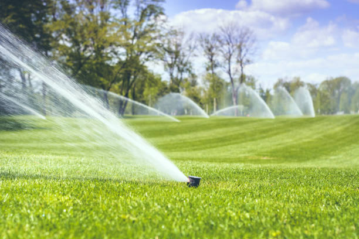
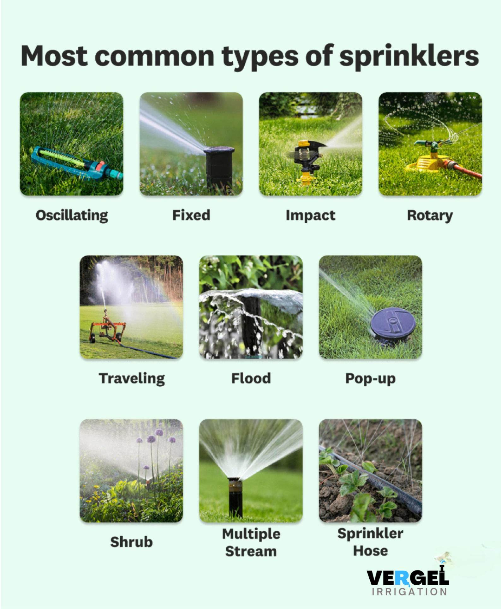
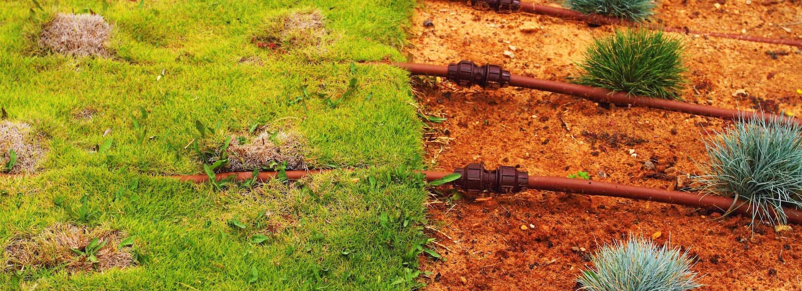

The Ultimate Guide to Calculating Lawn Sprinkler System Cost and Maximizing Irrigation Efficiency
As a homeowner, maintaining a lush, verdant lawn is a source of pride and joy. However, achieving and sustaining this level of lawn perfection can be a daunting task, especially when it comes to managing the water usage and ensuring efficient irrigation. This is where a lawn sprinkler system can be a game-changer, providing a reliable and customizable solution to keep your grass thriving.
In this comprehensive guide, I will walk you through the intricacies of calculating the cost of a lawn sprinkler system, as well as explore strategies for maximizing irrigation efficiency to save water and reduce your environmental impact. Whether you're a seasoned homeowner or a new one, this article will equip you with the knowledge and insights to make informed decisions about your lawn's irrigation needs.
Introduction to Lawn Sprinkler Systems
Lawn sprinkler systems are an essential component of modern landscaping, providing a convenient and automated way to water your lawn. These systems consist of a network of underground pipes, sprinkler heads, and a control unit that regulates the water flow and timing. By strategically placing the sprinkler heads throughout your lawn, you can ensure even and consistent coverage, promoting the overall health and appearance of your grass.
Benefits of Installing a Lawn Sprinkler System
- Consistent Watering: Lawn sprinkler systems deliver a consistent and even distribution of water across your lawn, ensuring that every square foot receives the necessary moisture for optimal growth.
- Time-Saving: Automated sprinkler systems eliminate the need for manual watering, saving you valuable time and effort that can be better spent on other landscaping tasks.
- Water Conservation: Modern sprinkler systems are designed with water-saving features, such as moisture sensors and smart controllers, which can significantly reduce water consumption and lower your utility bills.
- Improved Lawn Health: Consistent and efficient watering promotes the growth of healthy, lush grass, reducing the risk of bare patches, browning, and other lawn-related issues.
- Increased Property Value: A well-maintained lawn with a functional sprinkler system can enhance the curb appeal and overall value of your property.
Factors that Affect the Cost of a Lawn Sprinkler System
The cost of a lawn sprinkler system can vary significantly depending on several factors, including:
- Size of the Lawn: The larger the area to be covered, the more components (pipes, sprinkler heads, etc.) will be required, resulting in a higher overall cost.
- Type of Sprinkler System: Different sprinkler system types, such as in-ground, above-ground, or drip irrigation, have varying installation and material costs.
- Water Source and Pressure: The availability and quality of your water source, as well as the existing water pressure, can impact the system's design and the necessary equipment.
- Terrain and Landscaping: Factors like the slope of your lawn, existing landscaping features, and underground utilities can affect the complexity and cost of the installation.
- Labor Costs: The labor required for the installation, including excavation, pipe laying, and sprinkler head placement, can significantly impact the overall cost.
- Additional Features: Incorporating advanced features, such as smart controllers, rain sensors, or zone-based watering, can increase the system's cost.
By understanding these factors, you can better estimate the cost of a lawn sprinkler system and plan your budget accordingly.
Different Types of Lawn Sprinkler Systems
-

- In-Ground Sprinkler Systems: These systems are installed underground, with the sprinkler heads popping up from the ground when in use. They offer a clean, seamless appearance and are generally more durable than above-ground options.
- Above-Ground Sprinkler Systems: These systems use hose-connected sprinklers that are placed on the lawn's surface. They are typically more affordable and easier to install, but may be less visually appealing and more susceptible to damage.
- Drip Irrigation Systems: Drip irrigation systems deliver water directly to the plant's root zone, minimizing water waste and promoting efficient water usage. These systems are particularly well-suited for landscaping with shrubs, trees, and flower beds.
- Hybrid Systems: Hybrid systems combine elements of in-ground and above-ground sprinkler systems, offering a customizable solution that can be tailored to your lawn's specific needs.
Calculating the Cost of a Lawn Sprinkler System
To calculate the cost of a lawn sprinkler system, you'll need to consider the following factors:
- Size of the Lawn: Measure the total square footage of your lawn to determine the coverage area.
- Type of Sprinkler System: Decide on the type of system (in-ground, above-ground, or drip irrigation) that best suits your needs and budget.
- Number of Sprinkler Heads: Estimate the number of sprinkler heads required based on the lawn size and desired coverage.
- Water Source and Pressure: Assess the availability and quality of your water source, as well as the existing water pressure, to ensure the system can function effectively.
- Installation Costs: Factor in the labor costs for excavation, pipe laying, and sprinkler head installation.
- Additional Features: Consider the cost of any advanced features, such as smart controllers or rain sensors, that you may want to incorporate.
To help you calculate the estimated cost, here's a sample cost breakdown:
|
Item |
Cost Range |
|
In-Ground Sprinkler System (per square foot) |
$2 - $4 |
|
Above-Ground Sprinkler System (per square foot) |
$1 - $2 |
|
Drip Irrigation System (per square foot) |
$1 - $3 |
|
Sprinkler Heads (per head) |
$10 - $50 |
|
Control Unit |
$100 - $500 |
|
Installation Labor (per hour) |
$50 - $100 |
Keep in mind that these are just estimates, and the actual cost may vary depending on your specific location, local labor rates, and the complexity of your lawn's terrain.
Maximizing Irrigation Efficiency with a Lawn Sprinkler System
Achieving maximum irrigation efficiency is essential for both water conservation and cost savings. Here are some strategies to help you maximize the efficiency of your lawn sprinkler system:
-

- Install Smart Controllers: Smart controllers use weather data, soil moisture sensors, and other advanced features to automatically adjust the watering schedule based on the lawn's needs, reducing water waste.
- Implement Zoned Watering: Divide your lawn into distinct zones based on factors like sun exposure, soil type, and grass variety. This allows you to customize the watering schedule for each zone, ensuring that each area receives the appropriate amount of water.
- Use Efficient Sprinkler Heads: Select sprinkler heads that are designed for optimal water distribution and coverage, minimizing water waste and ensuring even coverage.
- Schedule Watering Strategically: Water your lawn during the early morning or late evening hours to reduce evaporation and maximize water absorption.
- Regularly Maintain the System: Inspect your sprinkler system for any leaks, clogged heads, or other issues, and promptly address them to maintain optimal efficiency.
- Consider Drought-Tolerant Landscaping: Incorporate drought-resistant plants and grasses into your lawn, which can reduce the overall water demand and lower your irrigation costs.
By implementing these strategies, you can significantly improve the efficiency of your lawn sprinkler system, leading to substantial water and cost savings over time.
Maintenance Tips for Your Lawn Sprinkler System
Proper maintenance is crucial for ensuring the longevity and optimal performance of your lawn sprinkler system. Here are some essential maintenance tips to keep in mind:
- Seasonal Inspections: Conduct a thorough inspection of your system at the beginning and end of each growing season to identify and address any issues.
- Sprinkler Head Adjustments: Regularly check the positioning and operation of your sprinkler heads, adjusting them as needed to ensure proper coverage and prevent water waste.
- Pipe and Valve Checks: Inspect the underground pipes and valves for any cracks, leaks, or blockages, and address them promptly to prevent water loss.
- Winterization: Properly winterize your system by draining the water lines and protecting the components from freezing temperatures to prevent damage during the off-season.
- System Upgrades: Consider upgrading your system with newer, more efficient components, such as smart controllers or high-performance sprinkler heads, to further improve water conservation and cost savings.
- Professional Maintenance: Enlist the help of a professional lawn sprinkler system maintenance service to ensure your system is running at optimal efficiency and to identify any issues that may require specialized attention.
By following these maintenance tips, you can extend the lifespan of your lawn sprinkler system, maintain its efficiency, and avoid costly repairs down the line.
Hiring Professionals for the Installation of a Lawn Sprinkler System
While it is possible to install a lawn sprinkler system yourself, hiring a professional installer can provide several benefits:
- Expertise and Experience: Professional installers have the knowledge and expertise to design and install a sprinkler system that is tailored to your lawn's specific needs, ensuring optimal performance and efficiency.
- Proper Permitting and Compliance: Experienced installers are familiar with local building codes and regulations, ensuring that your system is installed in compliance with all necessary permits and guidelines.
- Warranty and Ongoing Support: Many professional installation companies offer warranties on their work and provide ongoing maintenance and support services, giving you peace of mind and protecting your investment.
- Time and Efficiency: Professionals can complete the installation process more quickly and efficiently than a DIY approach, minimizing disruption to your lawn and landscaping.
- Safety Considerations: Proper installation of a sprinkler system requires specialized equipment and techniques to ensure the safety of both the system and your property.
When selecting a professional installer, be sure to research their credentials, read reviews, and obtain multiple quotes to ensure you are getting the best value for your investment.
Common Mistakes to Avoid When Installing a Lawn Sprinkler System
To ensure the success and longevity of your lawn sprinkler system, it's important to avoid the following common mistakes:
- Inadequate Planning: Failing to properly measure your lawn, assess the water source and pressure, and develop a comprehensive design plan can lead to an inefficient and costly system.
- Improper Pipe Sizing: Using the wrong size pipes can result in water pressure issues, water waste, and uneven coverage across your lawn.
- Incorrect Sprinkler Head Placement: Improperly positioning sprinkler heads can create dry spots, overlap, and uneven water distribution.
- Neglecting Drainage: Inadequate drainage can lead to waterlogging, soil erosion, and other issues that can damage your lawn and the sprinkler system itself.
- Failing to Winterize: Neglecting to properly winterize your system can result in costly freeze-related damage, requiring expensive repairs in the spring.
- Lack of Ongoing Maintenance: Failing to regularly inspect, maintain, and update your sprinkler system can lead to decreased efficiency, water waste, and a shorter system lifespan.
By being mindful of these common pitfalls and working with experienced professionals, you can ensure a successful and long-lasting lawn sprinkler system installation.
Conclusion and Final Thoughts
Investing in a lawn sprinkler system is a strategic decision that can transform the health and appearance of your lawn while also delivering long-term cost savings and environmental benefits. By understanding the factors that influence the cost of a lawn sprinkler system and implementing strategies to maximize irrigation efficiency, you can create a customized solution that meets your lawn's unique needs.
Remember, the initial investment in a lawn sprinkler system is just the first step. Proper maintenance and ongoing optimization are key to ensuring the system's longevity and continued performance. By following the tips and best practices outlined in this guide, you can enjoy a lush, vibrant lawn while minimizing your water usage and environmental impact.
If you're ready to take the next step in transforming your lawn, I encourage you to contact a reputable lawn sprinkler system installation company today. They can assess your property, provide a detailed cost estimate, and guide you through the process of designing and installing a system tailored to your specific needs. With their expertise and your commitment to maintaining your lawn's irrigation, you'll be well on your way to achieving the beautiful, healthy lawn of your dreams.